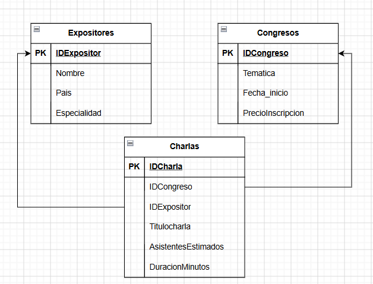

Conceptos Generales sobre: SQL, tipos de datos, normalización y modelado DER.
MySQL es un Sistema Gestor de Bases de Datos Relacionales (SGBD) de código abierto que utiliza el lenguaje SQL (Structured Query Language) para consultar, almacenar, organizar y administrar grandes volúmenes de información en tablas interrelacionadas. Su función principal es servir como motor central de datos para permitir que aplicaciones y sitios web puedan guardar, actualizar y recuperar información de manera estructurada, segura y eficiente.
Un Stored Procedure (procedimiento almacenado) es un bloque de código SQL con nombre propio que se guarda en la base de datos y se puede ejecutar (invocar) las veces que haga falta, en vez de reescribir la misma consulta una y otra vez. Sirve para encapsular lógica repetitiva, mejorar el rendimiento y centralizar reglas de negocio en el servidor.
DELIMITER //
CREATE PROCEDURE obtenerUsuariosPorNombre(IN nombreBuscado VARCHAR(100))
BEGIN
SELECT * FROM usuarios WHERE nombre LIKE CONCAT('%', nombreBuscado, '%');
END //
DELIMITER ;
-- Para ejecutarlo:
CALL obtenerUsuariosPorNombre('Fede');SELECT dentro de otra consulta. Se usa cuando el resultado de una consulta depende del resultado de otra.
SELECT nombre, email
FROM usuarios
WHERE id IN (SELECT id_usuario FROM pedidos WHERE total > 1000);SELECT u.nombre, p.total
FROM usuarios u
INNER JOIN pedidos p ON u.id = p.id_usuario;JOIN sin aclarar el tipo, MySQL asume INNER JOIN.
SELECT u.nombre, p.total
FROM usuarios u
JOIN pedidos p ON u.id = p.id_usuario;SELECT u.nombre, p.total
FROM usuarios u
LEFT JOIN pedidos p ON u.id = p.id_usuario;SELECT u.nombre, p.total
FROM usuarios u
RIGHT JOIN pedidos p ON u.id = p.id_usuario;OUTER JOIN sola: se usa combinada con LEFT/RIGHT/FULL.
UNION.
SELECT u.nombre, p.total FROM usuarios u LEFT JOIN pedidos p ON u.id = p.id_usuario
UNION
SELECT u.nombre, p.total FROM usuarios u RIGHT JOIN pedidos p ON u.id = p.id_usuario;SELECT u.nombre, c.nombre
FROM usuarios u
CROSS JOIN categorias c;% (cualquier cantidad de caracteres) y _ (un solo carácter).
SELECT * FROM usuarios WHERE email LIKE '%@gmail.com';ALTER TABLE usuarios ADD COLUMN telefono VARCHAR(20);GROUP BY (a diferencia de WHERE, que filtra antes de agrupar).
SELECT id_usuario, COUNT(*) AS cantidad
FROM pedidos
GROUP BY id_usuario
HAVING COUNT(*) > 5;ASC, por defecto) o descendente (DESC).
SELECT * FROM usuarios ORDER BY nombre ASC;SELECT id_usuario, SUM(total) AS gastado
FROM pedidos
GROUP BY id_usuario;CREATE TABLE pedidos (
id INT AUTO_INCREMENT PRIMARY KEY,
id_usuario INT,
total DECIMAL(10,2),
FOREIGN KEY (id_usuario) REFERENCES usuarios(id)
);WHERE.
DROP TABLE usuarios;
TRUNCATE TABLE pedidos;
DELETE FROM usuarios WHERE id = 5;El diccionario de datos es la documentación que describe cada tabla y cada columna de la base de datos: nombre, tipo de dato, si acepta NULL, restricciones (PK, FK, UNIQUE), y una breve descripción de qué representa. Sirve como referencia para cualquiera que trabaje con la base sin tener que leer el código SQL.
| Tabla | Columna | Tipo | Restricción | Descripción |
|---|---|---|---|---|
| usuarios | id | INT | PK, AUTO_INCREMENT | Identificador único del usuario |
| nombre | VARCHAR(100) | NOT NULL | Nombre completo | |
VARCHAR(100) | NOT NULL, UNIQUE | Correo del usuario |
| Tipo | Descripción | Ejemplo |
|---|---|---|
DATE | Guarda solo una fecha (año-mes-día). | 2026-09-21 |
INT | Números enteros. | 42 |
VARCHAR | Texto de longitud variable, con un máximo definido. | VARCHAR(100) |
ENUM | Lista fija de valores permitidos. | ENUM('activo','inactivo') |
DATETIME | Guarda fecha y hora combinadas. | 2026-09-21 14:30:00 |
DECIMAL | Números decimales exactos, ideal para dinero. | DECIMAL(10,2) |
FLOAT | Números decimales de precisión aproximada. | 3.14 |
CHAR | Texto de longitud fija. | CHAR(2) → 'AR' |
TIMESTAMP | Fecha y hora, autogenerable. | DEFAULT CURRENT_TIMESTAMP |
La normalización es el proceso de organizar las tablas de una base de datos para reducir la redundancia y evitar inconsistencias, dividiendo la información en tablas relacionadas.
Ejemplo de un Diagrama Entidad-Relación en formato de bloques mostrando las tablas Expositores, Congresos y la tabla intermedia Charlas:
